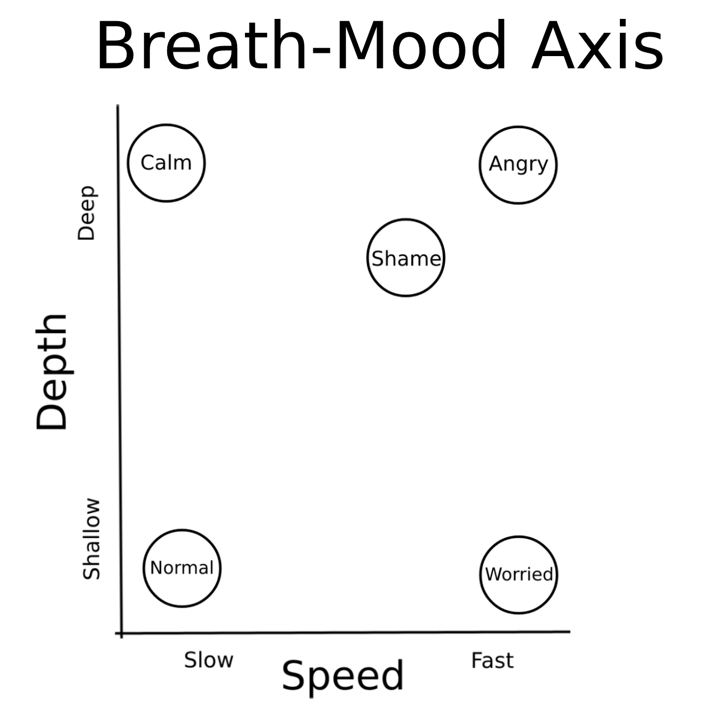
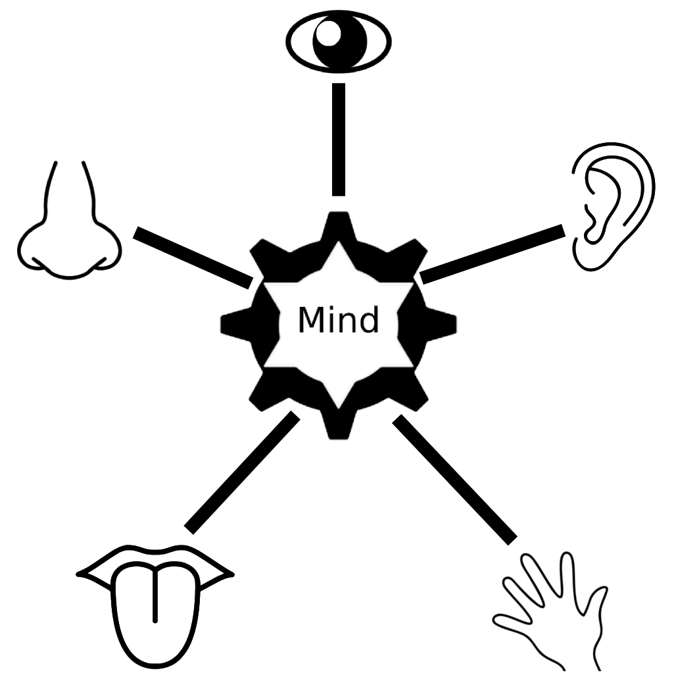
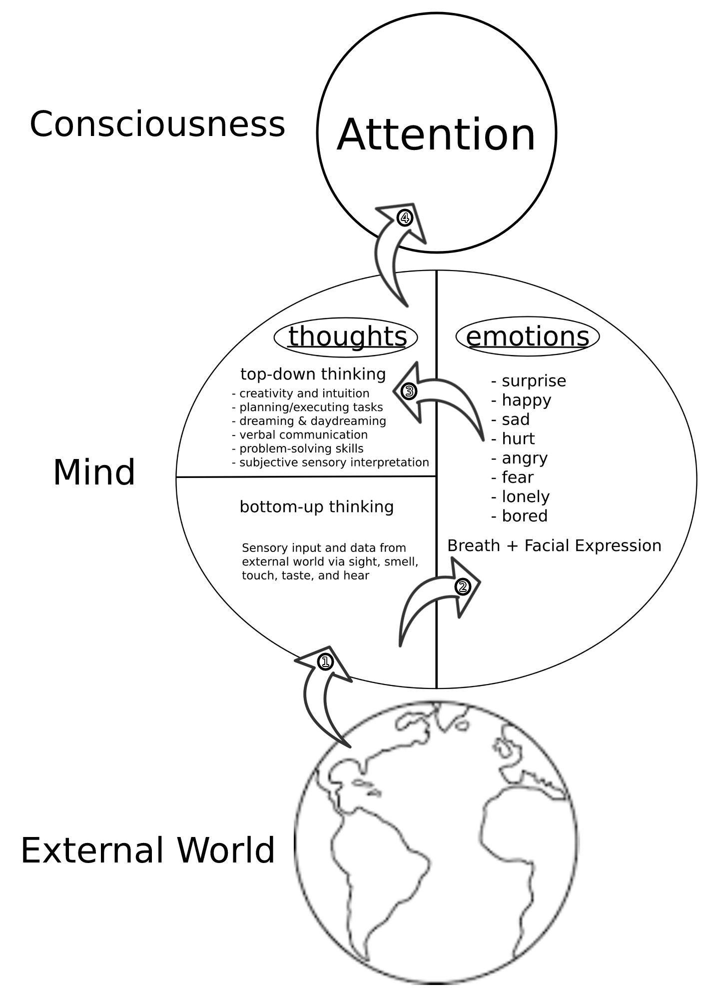
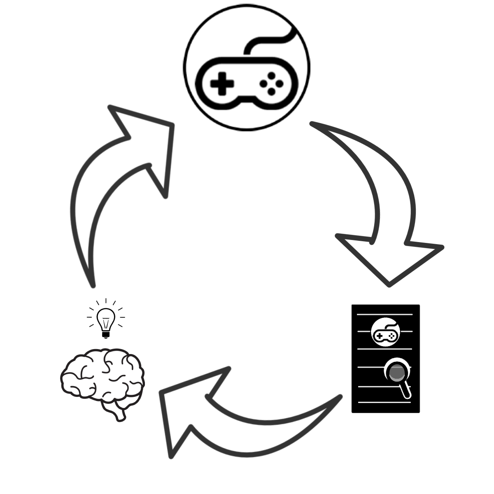

What is Meditation? Meditation is the act of focusing, and focusing on something long enough can lead you to a state of mind where you can experience 0 thoughts. There are many kinds of meditation techniques, each with there own unique style and specific goal. Finding the right kind of meditation practice meant for your specific tempermant is crucial for building a regular, fun, and consistent practice.
Different Meditative Styles: There are four main classes of meditation techniques, and are known in Sanskrit as Pranayama, Pratyahara, Dharana, and Jnana Yoga.
Pranayama: Breath-oriented techniques designed to cultivate a particular mood. Breath and Emotions are a strongly connected 2-way street, the way you feel can determine your breathing speed and depth, however purposely breathing at a particular rhythm and intensity can also alter your mood.
Timed Breathing |
Sama-vritti | Vishama-vritti | ||
Nose |
Surya/Chandra Bhedhana | Nadi Shuddhi | Anuloma Viloma | Prana Shuddhi |
Belly |
Yogic Breathing | Kapalabhati | Bhastrika | |
Breath-Retention |
Plavini | Murcha |
Pratyahara: Sensory withrawal and sensory controlling techniques designed to limit or control our thoughts. The thoughts we have are determined by what we observe with our 5 senses, cultivating healthy thoughts and reducing unhealthy thoughts involves having proper control of what our senses are exposed to.
Sound |
Internal Sound Indriya | Sound of Silence | |
Touch |
Body Scan | Kaya Shtiram | Shunya |
Taste |
Advaita Eating | Watch Food-Indriya | |
Mind Control |
Rotating Sense Awareness | Thought Control | |
Sensing Self |
Shanmukhi Mudra | Notice Faculty of Senses |
Dharana: Focusing techniques designed to clean out and increase the attention with no direction, helping with things like concentration and avoiding distractions. These techniques are recommended to try after practicing some amount of Pranayama and Pratyahara.
Jnana Yoga: Understanding, some meditation techniques are less about doing a standard sit-down practice and more about thinking, experiencing, and reflecting. These meditation techniques are more philosophical and introspective in nature.
Cultivate Prescence |
Phonetic Sound of Breath | Passing Doorways | Sound (Eyes Open / Close) | Wall Staring |
Observing vs Controlling |
Observe Breath (No Change) | Catching Breath All Day | ||
Detachment |
Mandala | Satya | Raga and Dvesha | |
Realizing True Self |
Shedding Ego | Change "I am" to "I feel like a" |
Ethos: Krishna Dasari is our dedicated meditation practitioner and has wanted to become a monk for over 20 years, travelling to different parts of the world to find the right place to take his vows, from countries like India, South Korea, Japan, China, and the Himalayas, but never quite found his home-base. As a result, he learned a lot of different perspectives on meditation, and his way of teaching people meditation sometimes appeals to a lot of different people.
A lot of people will try to learn meditation from an 'expert', but they're usually an expert on only their kind of meditation. The 'expert' will tell you "This is the way to meditate," but that doesn't work for everyone, so then those people are left thinking "I am bad at meditation," or "Meditation isn't for me", but each person is different & unique and finding the right meditative practice is all about figuring out which kind of meditation works for you. Oftentime if you were to go to an 'expert' on meditation, the 'expert' will try to get you to conform to their practice, but a good teacher actually does it the other way around.